01Ability lifecycle and moments
Five ability classes cover the usual shapes of an ability: Instant, Confirmed (aim, then confirm with a key press or release), Channeling (ticks for a duration), Charged (hold to charge, release to fire) and Passive. Each one publishes its stages as moments, and every module setting that asks "when" picks from those moments instead of needing graph code.
- Activation groups decide how abilities overlap: Exclusive Replaceable (a dodge may cancel this cast), Exclusive Blocking and Independent (an aura that runs beside anything). A group can change part-way, e.g. replaceable until confirmed, blocking after.
- Commit rules are settings, not code: when the cost is checked and paid, when the cooldown starts, and what interrupts the ability (a tag such as
ASC.State.Moving, or entering combat). - No mandatory graph nodes: charged and channelled abilities end themselves when their clock stops. A Blueprint graph is still available for custom logic, with helper nodes that read the modules.
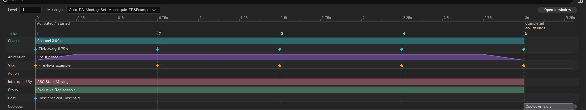
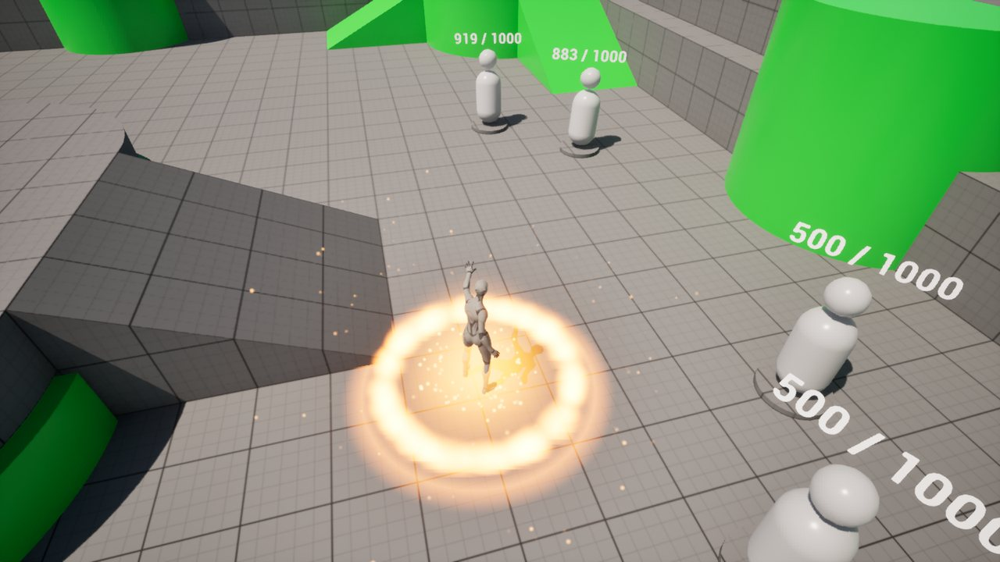
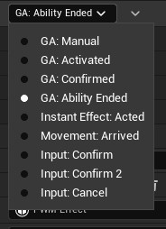
02Modules and shared values
Data modules hold a Default value plus named entries: Meteor Shower has one Radius for targeting and an Impact entry for each meteor's blast. Only resolvers choose an entry, so a value is never duplicated across modules.
- Ability values are small reusable expressions drawn Niagara-style in the details panel: a constant, a module's value, the ability level, a Blueprint variable, or Add / Subtract / Multiply / Divide of two of them. Fire Nova's ring is sized Radius module − 80, which no single multiplier could match across levels.
- Runtime values keep a configured base and a per-cast current value, reset on every activation, with Get / Set nodes for graphs.
- New modules can be written in C++ or Blueprint. One with moment settings gets its own timeline lane with no editor code: the timeline finds its moments by reflection, as the details panel does.
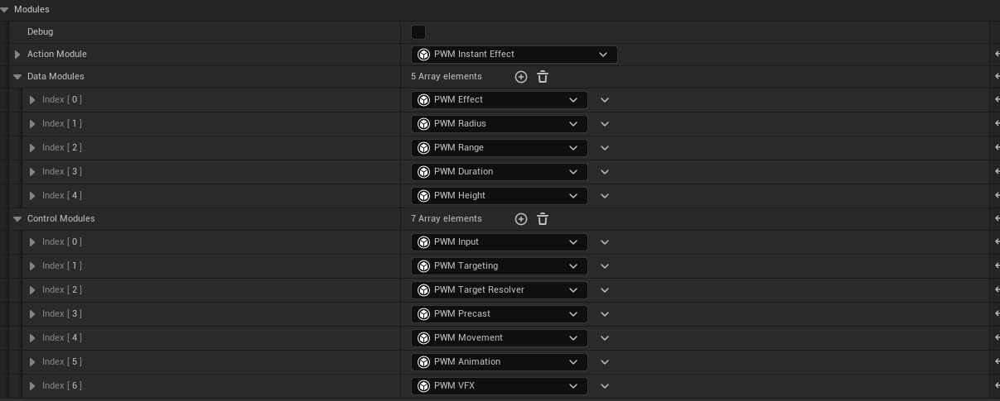
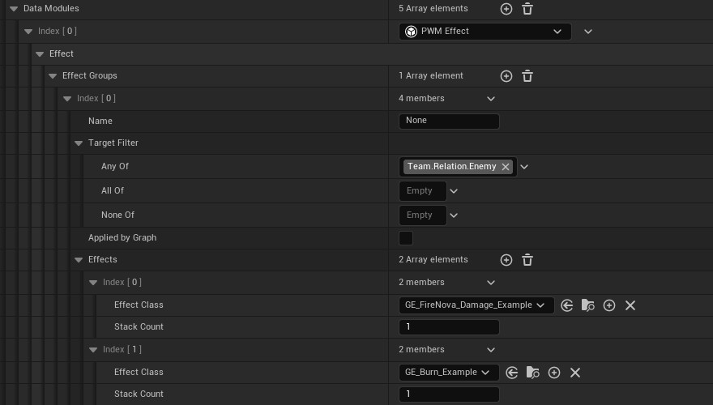
03Targeting for any genre
Aim never means "the camera". A targeting source produces the aim (screen centre for shooters, the cursor for top-down, MOBA and RTS play, the caster itself), a range policy clamps it, and resolvers turn it into targets: sphere, cone, cylinder, single, or a group of several. Team filters come from the teams plugin, so "enemies", "allies" or "self" are tags rather than code.
Target Pick is the soft lock-on most hero shooters use for single-target abilities: the enemy closest to the crosshair, within range and in sight, is highlighted and taken. The client picks, because only it knows what the player saw; the server re-checks the choice with a small allowance for latency instead of trusting it. In a test with 200 ms of simulated latency, the server kept all 27 of the client's picks.
Show code: the server's check of a client's pick
bool UPWTargetPick_ClosestToAim::Accept_Implementation(const AActor* Caster, const FPWTargetingResult& Aim, AActor* Picked) const
{
if (!Caster || !Picked)
return false;
// The same rules as the pick, with room for what latency moved: a little more range, twice the angle.
const float Range = GetRange();
if (!IsCandidate(Caster, Picked, Range > 0.f ? Range * ServerRangeAllowance : 0.f))
return false;
const float Angle = FMath::Max(MaxAngle, bKeepTarget ? KeepAngle : 0.f);
return AngleFromAim(Caster, Aim, GetAimPoint(Picked)) <= Angle * ServerAngleAllowance;
}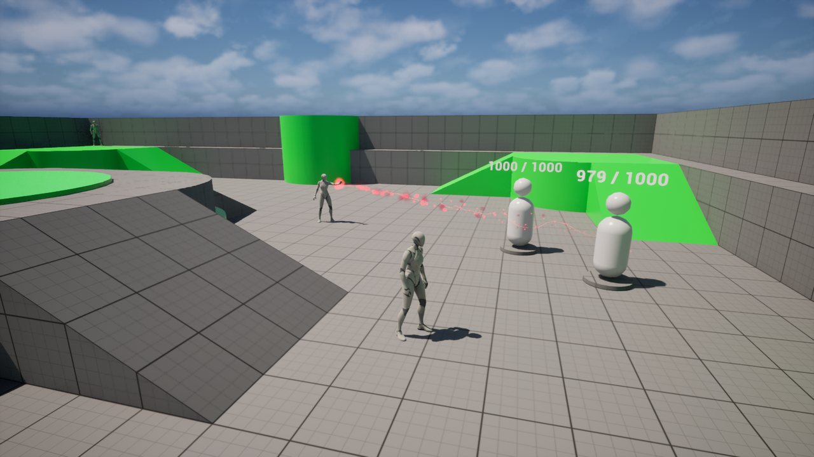
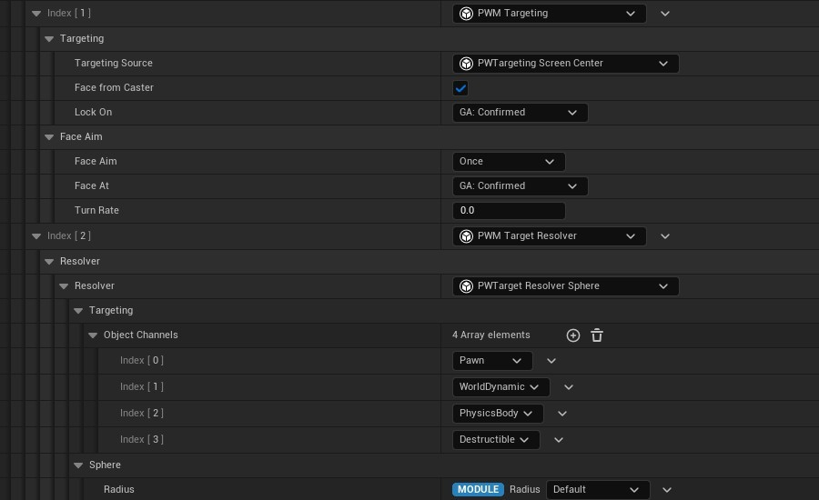
04Aim previews
While a confirmed or charged ability is being aimed, the Precast module shows what will happen, using the same targeting and data the cast will use, so the preview can't disagree with the result. Visualizers can be combined: a ground area with a target highlight, ghost actors showing exactly what a pattern will spawn, or a projectile path that follows the projectile's real speed and gravity.
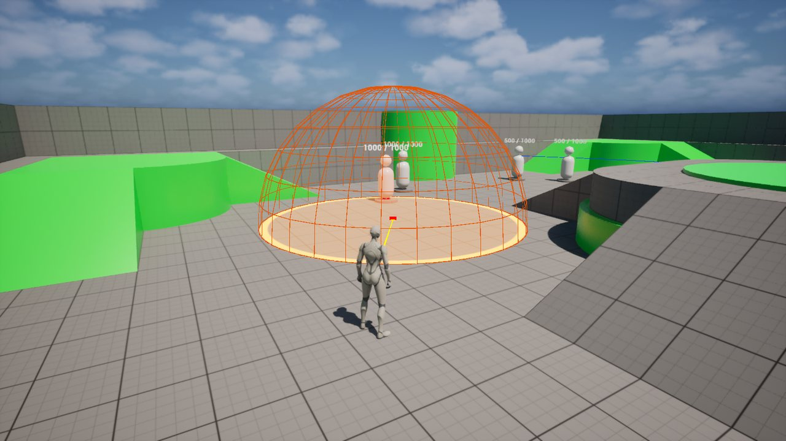
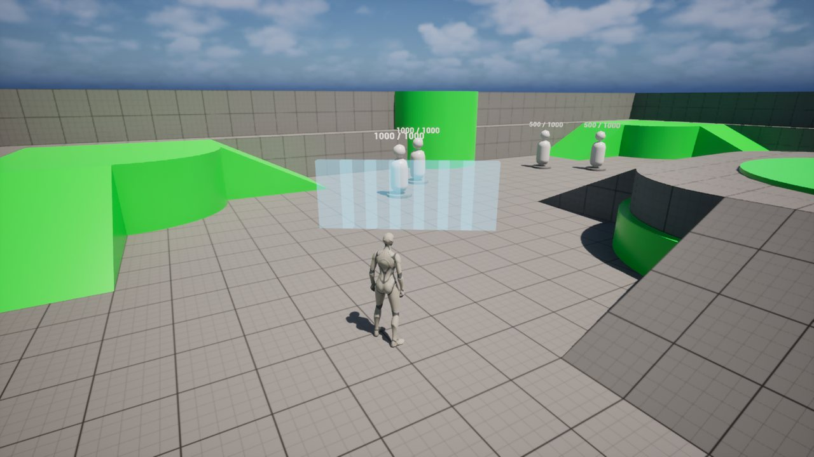
05Actions and spawn patterns
Action modules do the work: an instant effect on resolved targets, one or many spawned actors, single or multiple projectiles, an aura, or starting other abilities so a combo can be split into parts. Where things appear is decided by pattern objects: line, circle, rings, grid and random for spawns; fan and random spread for projectiles. Counts can grow with the ability's level from a curve table, and spawns can snap to the ground, face the caster or run in sequence.
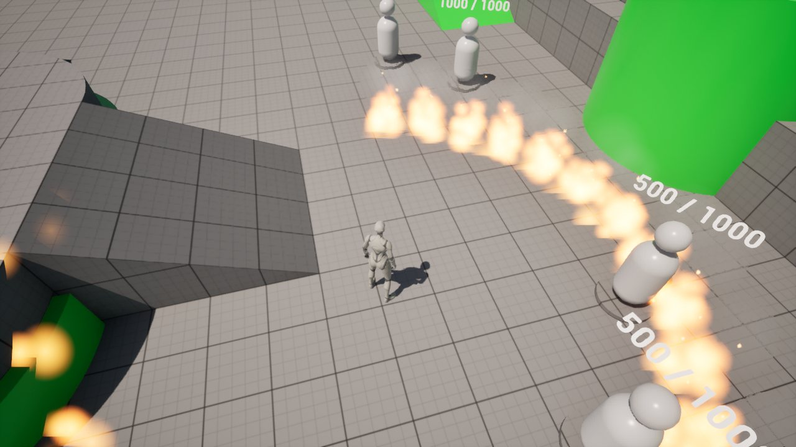
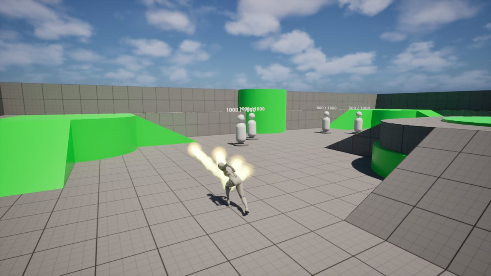
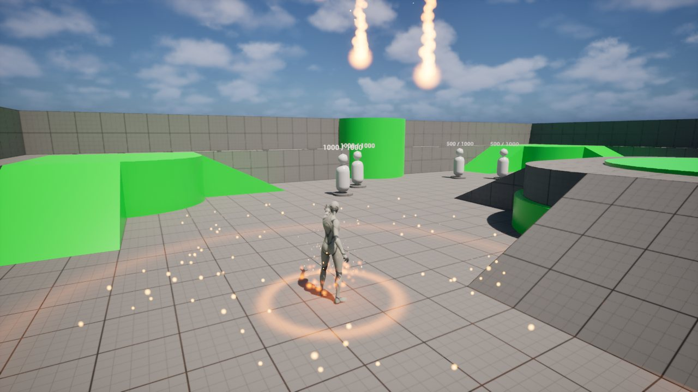
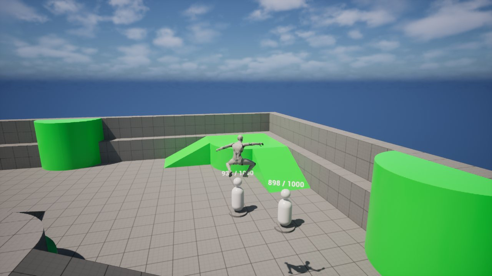
06Client-side prediction
GAS predicts ability activation and some effects; everything a framework adds on top usually waits for the server. In PW, a locally predicted ability predicts all of its module work: clocks (cast, charge, channel), effects on its targets, their removal, auras, and spawned actors.
- Spawn stand-ins: the casting client spawns its own copy of a projectile or actor at once. When the server's actor arrives, it either takes the stand-in's place, or stays hidden while the stand-in finishes what it started. A rejected cast removes its stand-ins.
- Clocks that agree: a client whose channel ran its full length ends it locally, so the server's copy finishes on its own clock instead of being cut short by a late message.
- Checked under latency: features are played on a listen server with clients under 150–200 ms of simulated latency, comparing what each machine saw.
Show code: the server's actor meets the client's stand-in
void UPWStandInSubsystem::ServerActorArrived(AActor* Real, const int32 Key, const int32 Index, const bool bStandInStays)
{
FEntry* Entry = Real && Key != 0 ? Find(Real->GetOwner(), Key, Index) : nullptr;
if (!Entry || Entry->Real.IsValid())
return;
Entry->Real = Real;
if (Entry->bTakenBack)
{
Shadow(Real);
return;
}
// The stand-in showed its whole life here, ending where it ended: the server's is not shown, even once the stand-in is gone.
if (bStandInStays)
{
Entry->bStandInStays = true;
Shadow(Real);
return;
}
RemoveStandIn(*Entry);
Entry->bTookOver = true;
}07Spell actors
Actors an ability spawns receive its data: caster, team, radius, duration, the resolver to use and the effects to apply, so a totem, wall or projectile does its job without knowing which ability made it. Projectiles add piercing, per-target hit cooldowns, rules for meeting other projectiles, and shields that stop only enemies' projectiles.
When a spell actor ends, it no longer vanishes. Its collision, movement and timers stop at once, but its effects stop spawning and play out what they have. In multiplayer, the server's actor tears off as it ends, so every player's copy ends at that moment and removes itself once its own effects are done. In the shot below, the eruptions had already ended on the server; on the watching client, the cracks stayed another 3 to 3.7 seconds, until their effects finished.
Show code: ending a spell actor
void APWSpellActor::EndSpell()
{
if (bEnding || !IsValid(this) || !CanRemoveHere())
return;
if (FadeOutTime <= 0.f)
{
Destroy();
return;
}
StopForEnd();
// Every player's copy ends with this one and then goes on its own once its effects are done; left to the server, it would vanish with it.
if (GetIsReplicated() && !IsStandIn())
TearOff();
FinishIfDone();
}
void APWSpellActor::TornOff()
{
Super::TornOff();
// The server's actor ended: this copy, now its own, ends as well and goes once its effects are done.
TellStandInsGone();
if (!bEnding)
StopForEnd();
FinishIfDone();
}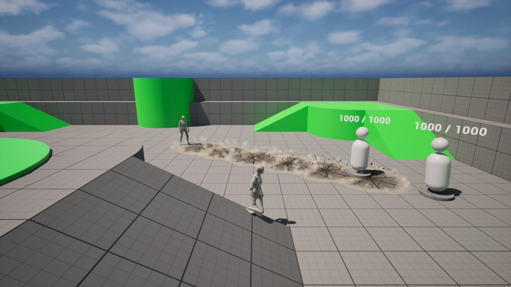
08Animation and VFX
- Montages by tag: an ability names an animation by tag (
AnimMontage.SpellCast), and each character's montage set supplies its own clip, so one ability works on different skeletons. Entries set start time, play rate, a fit-to-cast-time option and root motion scale. In the details panel, a button beside the tag opens the montage it resolves to. - VFX entries: what to play, on which moments, and where: on the caster at a socket, where the ability acted, at the aim, or on the ground under the caster like an aura's ring. The caster plays its own at once, and the ability system component sends them to the other players; looping ones go reliably, so a stop reaches every machine.
- Parameters without a graph: each entry sets Niagara user parameters from ability values, so an effect is sized by the same numbers as the gameplay. A value is a constant (optionally from a curve table), the ability's level, a module's value, the cast time or a Blueprint variable, or math on two of them.
- VFX points: an effect can name points such as the caster's hand or the target. The points follow their actors every frame, which is how Drain Life's stream stays attached to both ends.
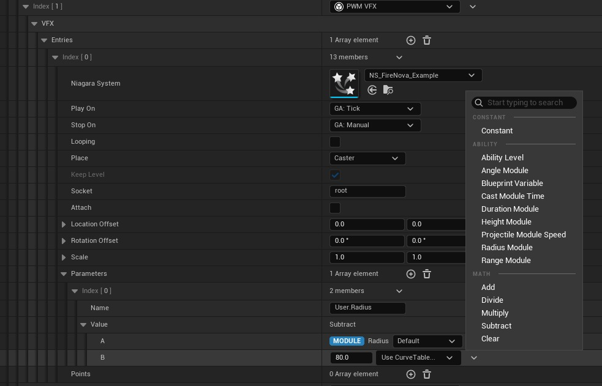
User.Radius is set to Subtract: the Radius module's Default entry minus 80, so the ring fits the damage area at every level, and keeps fitting as the ability's graph grows the radius during the channel. The open menu shows what a value can come from.09Editor tools
- The timeline (interactive version above) is drawn from the modules as they are edited, at any level, with the character's real montage lengths.
- Setup checks: a setting that can't work as set gets a warning or error icon on its row, its list entry and its module, and the same note shows on the timeline and in asset validation. Examples: a module that needs another module, or an input entry nothing raises.
- Live Tuning edits the ability, its effects, data asset and curve table during play. Changes apply between casts, with undo/redo and save to defaults.
- Debugging: one checkbox per ability turns on each module's debug drawing and server logs; console commands and shortcuts do the same for every ability at once.

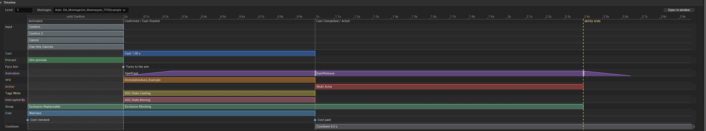